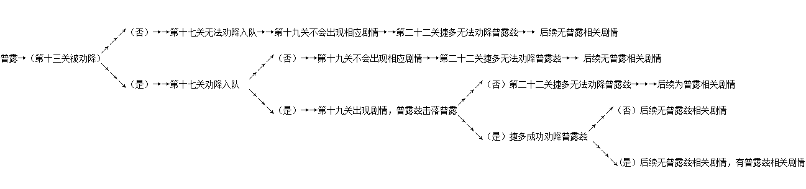

一般来说事件由发生的条件和执行的结果两个元素组成，但是在实际过程中会有相当大的一部分干扰对事件的执行造成阻碍从而引起BUG，这个时候我们就要加入相应的判定条件来避免这些BUG产生，这个就是所谓的全局设定。接下�砦揖痛佑蜗啡�局设定、关卡全局设定、回合全局设定来进行一一说明。
1.游戏全局设定
游戏全局设定一般是对隐藏人物或者由人物选择性而产生的分支进行的事件处理。简单地拿原版的普露和普露兹来说（这个应该算是相当复杂的游戏全局设定），普露的入队条件是第十三关由捷多劝退，然后在第十七关打残后再次由捷多劝降入队。普露兹的入队条件是在第十九关的时候击落普露，然后在第二十二关时由捷多说得。从逻辑关系上来看，以上隐藏满足以下关系：

2.关卡全局设定
3.回合全局设定
回合全局设定相对于以上两部分来说是最直观的的，也是最应该掌握的。我还是举一个简单的例子来说明。拿原版第十一关巴尔西昂的撤退事件来说，事件发生的条件是第7回合，执行的结果是巴尔西昂传真移动到指定地点然后撤退。如果将执行的结果更改为移动到指定地点，那么可能会出现这样一个结果：我方四个单位将其包围，那么如果没有写相应的分支执行结果，执行该事件的时候就会死机。因为根据剧情设定的目的是要巴尔西昂撤退，所以必须选择用传真来执行移动，考虑到了被我方包围的情况，避免了此BUG的产生。另外，就此事件来说，巴尔西昂在撤退之前被我方击落的情况也是应当被考虑的，但是由于我方不足矣将其击落，所以此分支就不需要添加了，参数结果所导致的分支大多数时候是要考虑的，否则很容易出现BUG，一般而言在无法确定的情况下我们都会设定相应的分支来进行避免。例如刚才被击落的情况，可以设定为在巴尔西昂在被击落后同样执行撤退，这样既避免了BUG又可以使得事件和剧情顺利地执行。